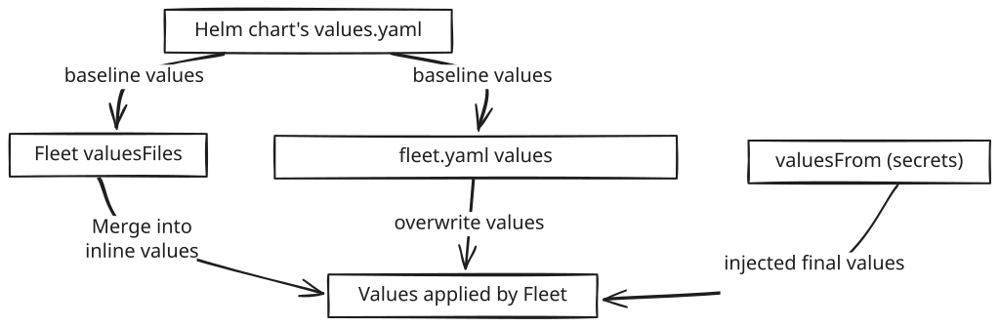

Gitリポジトリの内容
SUSE® Rancher Prime Continuous Deliveryは、gitリポジトリからバンドルを作成します。これは、パスを明示的に指定することによって、または`fleet.yaml`が見つかったときに発生します。
フォルダーにはHelmチャートが含まれているか、参照されている可能性があります。それは、通常のKubernetesマニフェストであるか、Kustomizeフォルダーである可能性があります。各バンドルは、デプロイメント用の単一のHelmチャートに変換されます。
`fleet.yaml`ファイルには、デプロイメントのためのすべてのオプションが含まれています。
バンドル名
デフォルトでは、バンドル名はGitRepoの名前とバンドルが作成されるパスから生成されます。ただし、バンドルの名前は、`name`フィールドを`fleet.yaml`ファイルで使用することによって上書きできます。
バンドルのライフサイクルは、各バンドルに追加されたHelm releaseName`フィールドによってリリース間で追跡されます。releaseNameが`fleet.yaml`内で指定されていない場合、それは`GitRepo.name + path`から生成されます。長い名前は切り捨てられ、-<hash>`プレフィックスが追加されます（バンドル名は53文字に制限されています）。
リポジトリのスキャン方法
gitリポジトリには明示的に必要な構造がありません。スキャンされたリソースはKubernetesのリソースとして保存されるため、gitでスキャンしているディレクトリに任意の大きさのリソースが含まれていないことを確認することが重要です。現在、デプロイされるリソースには制限があり、gzipで1MB未満にする必要があります。 複数のパスを`GitRepo`に定義でき、各パスは独立してスキャンされます。 内部的に、各スキャンされたパスはバンドルになり、SUSE® Rancher Prime Continuous Deliveryが独立して管理、デプロイ、監視します。
SUSE® Rancher Prime Continuous Deliveryは、リソースがどのようにデプロイされるかを決定するために、次のファイルを探します。
| ファイル | 場所 | 意味 |
|---|---|---|
Chart.yaml |
/ `path`に対して相対的または`fleet.yaml`からのカスタムパス |
リソースはHelmチャートとしてデプロイされます。詳細なオプションについては、`fleet.yaml`を参照してください。 |
kustomization.yaml |
/ `path`に対して相対的または`fleet.yaml`からのカスタムパス |
リソースはKustomizeを使用してデプロイされます。詳細なオプションについては、`fleet.yaml`を参照してください。 |
fleet.yaml |
任意のサブパス |
fleet.yamlが見つかった場合、新しいbundleが定義されます。これにより、同じリポジトリ内でチャート、Kustomize、および生のYAMLを混在させることができます。 |
.yaml |
任意のサブパス |
|
overlays/{name} |
/ `path`に対して相対的 |
生のYAML（KustomizeやHelmではない）を使用してデプロイする場合、`overlays`はカスタマイズ用の特別なディレクトリです。 |
ユーザーによって明示的に定義された代替スキャン
前述の方法に加えて、SUSE® Rancher Prime Continuous Deliveryはバンドルを定義するためのより直接的なユーザー主導のアプローチもサポートしています。
このモードでは、SUSE® Rancher Prime Continuous Deliveryは指定されたベースディレクトリ内で見つかったすべてのリソースをロードします。オプションファイルが明示的に提供されていない場合、そのディレクトリのルートにある`fleet.yaml`ファイルを見つけようとします。 従来のスキャン方法とは異なり、これは再帰的ではなく、ユーザーによって明示的に指定されたバンドル定義以外を見つけようとはしません。
ディレクトリ構造の例
driven
|___helm
| |__ fleet.yaml
|
|___simple
| |__ configmap.yaml
| |__ service.yaml
|
|___kustomize
|__ base
| |__ kustomization.yaml
| |__ secret.yaml
|
|__ overlays
| |__ dev
| | |__ kustomization.yaml
| | |__ secret.yaml
| |__ prod
| | |__ kustomization.yaml
| | |__ secret.yaml
| |__ test
| |__ kustomization.yaml
| |__ secret.yaml
|__ dev.yaml
|__ prod.yaml
|__ test.yaml対応するGitRepo定義
kind: GitRepo
apiVersion: fleet.cattle.io/v1alpha1
metadata:
name: driven
namespace: fleet-local
spec:
repo: https://github.com/0xavi0/fleet-test-data
branch: driven-scan-example
bundles:
- base: driven/helm
- base: driven/simple
- base: driven/kustomize
options: dev.yaml
- base: driven/kustomize
options: test.yaml上記の例では、ユーザーは生成される4つのバンドルを明示的に定義しています。
-
最初のケースでは、ベースディレクトリが`driven/helm`として指定されています。ディレクトリ構造に示されているように、このパスにはBundleの設定に使用される`fleet.yaml`ファイルが含まれています。
-
2番目のケースでは、ベースディレクトリは`driven/simple`で、Kubernetesリソースマニフェスト（
configmap.yaml`と`service.yaml）のみが含まれています。`fleet.yaml`またはオプションファイルが指定されていないため、SUSE® Rancher Prime Continuous Deliveryはデフォルトの動作を使用してBundleを生成します。つまり、ディレクトリ内で見つかったすべてのリソースを単にパッケージ化します。 -
3番目と4番目のケースは、同じベースディレクトリ`driven/kustomize`を参照しています。ただし、それぞれ異なるオプションファイル（
dev.yaml`と`test.yaml）を指定しています。これらのオプションファイルは、適切なkustomizeオーバーレイサブディレクトリを選択し、共有ベースの上に適用することによって、各環境（例：dev、test）に特有のオーバーレイ設定を定義します。
SUSE® Rancher Prime Continuous Deliveryは、提供されたオプションファイルが異なる設定を指しているため、同じベースパスから派生しているにもかかわらず、これらを異なるBundleとして処理します。
3番目と4番目のBundleで使用されるファイルの例は以下の通りです：（これらのファイルは`fleet.yaml`と全く同じ形式ですが、名前で参照できるようになったので、私たちのニーズに最も適したものを使用できます）
namespace: kustomize-dev
kustomize:
dir: "overlays/dev"これらのファイルで定義されたパスは、Bundleが記述されたときに使用されたベースディレクトリに対して相対的である必要があることに注意することが重要です。
例えば、前述の構造を用いて、ベースディレクトリを`driven/kustomize`として定義しています。それがKustomizeファイルで使用されるパスのルートとして使用する必要があるディレクトリです。
私たちは`dev.yaml`ファイルをパス`driven/kustomize/overlays/dev`に置くことを決定することができ（これはサポートされています）、次にBundleを次のように定義します：
bundles:
- base: driven/kustomize
options: overlays/dev/dev.yamlただし、`dev.yaml`内で定義されたパスは、依然として`driven/kustomize`に対して相対的であるべきです。 これは、SUSE® Rancher Prime Continuous Deliveryがオプションファイルを読み取るとき、常にベースディレクトリをルートとして使用するためです。
言い換えれば、前の例…では、これは不正確になります：
namespace: kustomize-dev
kustomize:
dir: "."そして、正しい定義は依然として次のようになります：
namespace: kustomize-dev
kustomize:
dir: "overlays/dev"この新しいBundleの定義方法により、SUSE® Rancher Prime Continuous Deliveryははるかに直接的になり、kustomizeを使用したデプロイメントの採用も簡素化されます。 この例では、各Bundleに対してどのバージョンを希望するかを指定できる完全なkustomizeのユースケースを見ることができます。
前のスキャンオプションでは、SUSE® Rancher Prime Continuous Delivery がどの YAML を使用してバンドルを構成するかを決定できないため、自分で見つけようとします（これにより、時には十分な柔軟性が提供されないことがあります）。
|
ユーザーがスキャンしたバンドルから無関係なファイルを除外する このバンドルスキャンモードを使用する場合、SUSE® Rancher Prime Continuous Delivery は GitRepo で明示的に参照されていないバンドル設定ファイルを除外しません。たとえば、上記の例のディレクトリ構造では：
これを緩和するには、 |
バンドルからファイルとディレクトリを除外する
SUSE® Rancher Prime Continuous Delivery は、.fleetignore ファイルを使用してファイルとディレクトリの除外をサポートしており、.gitignore ファイルが git リポジトリでどのように動作するかに似ています：
-
Glob 構文は、Golang の
filepath.Matchを使用してファイルまたはディレクトリを一致させるために使用されます。 -
空行はスキップされるため、可読性を向上させるために使用できます。
-
空白や
#のような文字は、バックスラッシュでエスケープできます。 -
末尾の空白は無視されますが、エスケープされている場合を除きます。
-
コメント、つまりエスケープされていない
#で始まる行はスキップされます。 -
指定された行は、区切り文字が提供されていなくても、ファイルまたはディレクトリに一致することがあります。
-
一致は、
.fleetignoreが存在するディレクトリの下の任意のレベルで見つかる可能性があります。 -
複数の
.fleetignoreファイルがサポートされています。
root/
├── .fleetignore # contains `ignore-always.yaml'
├── something.yaml
├── bar
│ ├── .fleetignore # contains `something.yaml`
│ ├── ignore-always.yaml
│ ├── something2.yaml
│ └── something.yaml
└── foo
├── ignore-always.yaml
└── something.yamlサポートされていません：
-
ダブルアスタリスク (
**) -
`!`を明示的に含める
fleet.yaml
`fleet.yaml`は、gitリポジトリに含めることができるオプションのファイルで、リソースのデプロイやカスタマイズの挙動を変更します。`fleet.yaml`は常に`path`の`GitRepo`に対してルートにあり、`fleet.yaml`を持つサブディレクトリが見つかった場合、新しいバンドルが定義され、親バンドルとは異なる設定が行われます。
|
Helmチャートの依存関係: SUSE® Rancher Prime Continuous Deliveryは、フラグ`disableDependencyUpdate`（デフォルトでは`false`）が`true`に設定されていない限り、Helmチャートの依存関係の更新を自動的に処理します。 自動依存関係の更新が無効になっている場合は、手動で次を実行する必要があります:
詳細については、RancherのSUSE® Rancher Prime Continuous Deliveryドキュメントを参照してください。 |
利用可能なフィールドは、fleet.yamlリファレンスに文書化されています。 プライベートHelmリポジトリの場合、ユーザーはgitリポジトリリソースからシークレットを参照できます。 プライベートHelmリポジトリの使用を参照してください。
Helm値の使用
変更が`values.yaml`に適用される方法:
-
最も最近適用された変更が以前の値を上書きします。
-
マージ順序:
helm.values→helm.valuesFiles→helm.valuesFrom

ターゲティングステップは、クラスター情報を使用して値をテンプレートとして扱うことができます。詳細情報: fleet.yamlのテンプレート。
`disablePreProcess`を使用してこれを無効にできます。
値の中の資格情報
チャートが資格情報を生成する場合、それらを上書きしないと、チャートが継続的に再デプロイされる可能性があります。
Kubernetesの暗号化が有効な場合、`valuesFrom`を介して読み込まれた資格情報は静止時に暗号化されます。
テンプレート化
ターゲティングステップは、値をテンプレートとして扱い、`clusters.fleet.cattle.io`リソースから情報を埋め込むことができます。詳細については、Helmの値のテンプレート化を参照してください。
`fleet.yaml`で、`disablePreProcess`を設定することでこれをオフにできます。これは、他のテンプレート言語との競合を避けるために便利です。
チャート自身の`values.yaml`を`valuesFiles:`経由で参照する必要はありません。チャートに含まれる`values.yaml`ファイルは、エージェントがチャートをインストールする際に常にデフォルトとして使用されます。
チャートがテンプレート内で証明書やパスワードを生成する場合、これらの値は上書きする必要があります。そうしないと、これらの値が変更されるたびにチャートが継続的にデプロイされる可能性があります。
`valuesFrom`を使用してダウンストリームクラスターから読み込まれた資格情報は、Kubernetesでデータ暗号化が有効な場合、デフォルトで静止時に暗号化されます。デフォルトの`values.yaml`ファイルに含まれる資格情報、または`values:`や`valuesFiles`を通じて定義された資格情報は、バンドル作成時にリポジトリから読み込まれるため、暗号化されません。
ハードニングされたクラスターは、バンドル内に資格情報を保存する際に、アップストリームクラスターの静止時に暗号化されたリソースのリストにFleet CRDを追加する必要があります。
Helm `values.yaml`とFleet `valuesFiles`の理解
Fleetを使用してHelmチャートをインストールすると、チャートのビルトイン`values.yaml`や`fleet.yaml`で参照される追加の値ファイルを使用して、値を構成および参照する複数の方法が提供されます。これらのファイルは異なる目的を持ち、どのように相互作用するかを理解することが重要です。

ディレクトリ構造の例：
.
├── Chart.yaml
├── fleet.yaml
├── README.md
├── templates/
│ ├── deployment.yaml
│ └── service.yaml
└── values.yaml # chart defaultsHelmチャートの`values.yaml`ファイルを使用して、
-
デフォルト設定を提供し、ユーザーがチャート自体を変更することなくデフォルトを上書きできるようにします。
-
Kubernetesリソースの共通デフォルトを定義します。
Helmチャートの`values.yaml`はテンプレート化をサポートしていません。任意の置換は、Fleetがチャートを適用する前にチャートのレンダリング中に行われます。
-
このファイル内でシェル変数（例えば、`${var}`）を使用することはできません。
-
`${var}`が表示される場合、Helmはそれをプレーンテキストとして扱いますので、エスケープする必要はありません。
Fleet valuesFiles referenced from fleet.yaml
Fleetは、`fleet.yaml`を通じて追加のvaluesファイルを参照することを許可します。これらのファイルは、チャートの基本デフォルトを上書きまたは拡張します。
-
`valuesFiles`エントリは、そのファイルの内容を`fleet.yaml`のvaluesセクションにコピー＆ペーストするのと同等です。
-
これは、値を複数のファイルに分割するための便利な機能です。
-
Helmチャートの`values.yaml`とは異なり、Fleetのvaluesファイルはテンプレート化をサポートしており、環境ごとの動的な設定を可能にします。
例 fleet.yaml:
helm:
valuesFiles:
- values.prod.yaml # overrides baseline`valuesFiles`は`fleet.yaml`から参照されるFleetを使用して、次のことができます：
-
環境固有のオーバーライドを適用します（開発、ステージング、本番）。
-
チャートのデフォルトに含まれていない高度な機能を有効にします。
ベストプラクティス： Helm values.yaml、fleet.yaml values:、または`valuesFiles`を使用する場合でも、これらのファイルに資格情報を保存しないでください。推奨される安全なアプローチは、Kubernetes SecretsまたはConfigMapsを参照する`valuesFrom`を使用することです。これにより、ダウンストリームのクラスターでSecretsを作成する必要がありますが、機密データが安全に保存されることが保証されます。
ValuesFromを使用する
これらの例は、`valuesFrom`の使用に関するスタイルと形式を示しています。
下流クラスターへのConfigMapおよびSecretの伝播：ConfigMapおよびSecretは、一般的に下流クラスターで直接作成されるべきです。
しかし、SUSE® Rancher Prime Continuous Delivery v0.14.0以降、HelmOpの`downstreamResources`フィールドを通じて参照され、ターゲットとする下流クラスターに自動的に伝播されることも可能です。
詳細については、実験的下流リソースを参照してください。
例のConfigMap：
apiVersion: v1
kind: ConfigMap
metadata:
name: configmap-values
namespace: default
data:
values.yaml: |-
replication: true
replicas: 2
serviceType: NodePort例のSecret：
apiVersion: v1
kind: Secret
metadata:
name: secret-values
namespace: default
stringData:
values.yaml: |-
replication: true
replicas: 3
serviceType: NodePortそれらを参照する：
helm:
chart: simple-chart
valuesFrom:
- secretKeyRef:
name: secret-values
namespace: default
key: values.yaml
- configMapKeyRef:
name: configmap-values
namespace: default
key: values.yaml
values:
replicas: "4"クラスターごとのカスタマイズ
`GitRepo`は、リポジトリがデプロイされるクラスターを定義します。`fleet.yaml`は、ターゲットごとのカスタマイズを定義します。
同じネームスペース内のすべてのクラスターとグループは、ターゲットに対して評価されます。最初の一致が適用されます。
targetCustomizations:
- name: all
clusterSelector: {}
- name: none
clusterSelector: nullクラスター名による一致：
targetCustomizations:
- name: prod
clusterName: fleetnameクラスターごとのカスタマイズを参照してください。
生のYAMLリソースカスタマイズ
# Base files
deployment.yaml
svc.yaml
# Overlay files
overlays/custom/configmap.yaml
overlays/custom/svc.yaml
overlays/custom/deployment_patch.yamlルール:
-
一致する名前は基本ファイルを置き換えます。
-
`_patch.`ファイルはパッチを適用します（JSON/戦略的/JSONPatch）。
クラスターおよびバンドルの状態
ステータスフィールドを参照してください。